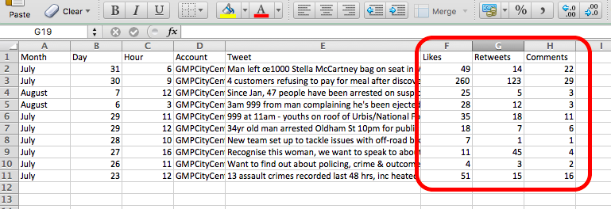

Chapter 9 Levels of measurement
If we set out to collect our own data, we make sure that we collect all the variables needed to answer our question, from all the observations that we have. The kinds of variables we have, determine the kinds of questions that we ask. For example, if we want to ask questions such as the one about the tweets above: “Which tweet has the highest number of likes?” we need to have numeric a variable. Numeric variables let us answer questions about quantity. For example, if we want to know the average number of crimes per month, we will need a numeric variable of number of crimes, for each month. Just like for the tweets, we had a numeric variable of the number of likes for each tweet. Put simply, number questions are answered by numeric variables.
9.1 Activity 3.1: Levels of measurement pt. 1
Have a look back at your tweet data that you created. Which variables are numeric?
Stop here again and turn to the person next to you. Discuss with them which variables you think are numeric. Do you agree on your choices?
NOTE: It’s important that you take some time to actually try to think of this on your own - and I would recommend that you talk this through with someone. If you are happy to chat to the person next to you - do this now. If not, then raise your hand, and myself or one of the TAs will come over. Tell us that you don’t want the answer, you just want to talk through which variables you think are numeric. We will listen, and not judge. I’ll just wait a moment while you take time to speak to someone now.

So is this the same as you thought? If yes, nice work!
If you did not get this right, was that because you also selected the day and the hour variables? If it was, then that is perfect, because that is what I was secretly hoping you would do!
Why are day and hour not numeric variables? After all they are numbers, right? Well a simple way to think about that is - does it make sense to calculate the average hour for tweets to be sent? If I told you, the average hour for GMP tweets if 13.5, is that something meaningful? Or if I told you that the average day is 15? Not hugely. Hour of the day, and day of the month, which is what these variables represent, are variables which fall into a different level of measurement. These are ordinal variables. What does that mean? Well the clue is in the name, ordinal variables that are not numeric, but they do fall into a natural order. Natural order?? What’s that? Well natural order just means that there is a meaningful order that you can put these variables in. You know which comes after which one. For example you can consider letters of the alphabet to follow a natural order, so common we call it alphabetical order. If I tell you to arrange medium, large, small, you know that what I mean is to put them in this order: small, medium, large. Ordinal variables are variables where such a known order exists.
9.2 Activity 3.2: Levels of measurement pt. 2
So on that note - can you find the other ordinal variables in your tweets data?
Yes you are right, it’s Month. You know that if I say January, February, March, then the value to follow is April, and not November. There is an order that these values fall, making Month an ordinal variable.
So what about the others? Account and Tweet? These are nominal variables. These are sometimes also referred to qualitative variables. But you can still carry out quantitative analysis on them. You will very often see nominal variables in quantitative analysis. In this case, the Account variable tells you who is tweeting, and if you have tweets from many different accounts, for example we also looked at @gmptraffic and @GMPMcrAirport, we could compare tweets between them. These variables are nominal and not ordinal, because they do not fall into any particular order. You can arrange them in any order, and it would look just as legitimate as any other order.
Starting to make sense? To recap, there are levels of measurement that each variable can fall into , and these are numeric, ordinal, or nominal. By the way, ordinal and nominal are also called categorical variables, because they assign each observation into a category. Then, depending on whether the category values can be put in a meaningful order or not, you can tell if it’s an ordinal-categorical, or nominal-categorical variable.
Confused? Let’s look at this again, but with the crimes data.
Let’s glance at the crimes data set first:
| X | Month | Reported.by | Falls.within | Longitude | Latitude | Location | LSOA.code | LSOA.name | Crime.type | Last.outcome.category | Context | borough |
|---|---|---|---|---|---|---|---|---|---|---|---|---|
| 1 | 2016-05 | Greater Manchester Police | Greater Manchester Police | -2.462774 | 53.6221 | On or near Scout Road | E01012628 | Blackburn with Darwen 018D | Violence and sexual offences | Unable to prosecute suspect | NA | Blackburn with Darwen |
| 2 | 2016-05 | Greater Manchester Police | Greater Manchester Police | -2.464422 | 53.6125 | On or near Parking Area | E01004768 | Bolton 001A | Anti-social behaviour | NA | Bolton | |
| 3 | 2016-05 | Greater Manchester Police | Greater Manchester Police | -2.464422 | 53.6125 | On or near Parking Area | E01004768 | Bolton 001A | Anti-social behaviour | NA | Bolton |
One variable you can see there is the one called Crime.type. This variable can take a value that corresponds to one of the crime types listed in the Police.UK FAQ. For every crime incident recorded, an officer will have to classify this crime incident into one of these categories. All of these categories are all the possible values that the Crime.type variable can take. This is a categorical variable, as its possible values are categories. Further subset, this is a nominal variable, because the categories do not fall into a natural order. These categories are mutually exclusive (a crime is classed as either a Burglary or Vehicle Crime, but not both at the same time) and cannot be ordered in a meaningful way (alphabetical is not meaningful!). If they did have a meaningful order (for example days of the week have an order, or the values small, medium, large have an order) they would be ordinal variables. Both ordinal and nominal variables are categorical, because they deal with values that can take a finite number of values, or in other words, belong to a set number of categories. They group your data into one of the available categories.
But not all variables are categorical, some are numeric . These types of varibles are numbers, and include things like the number of burglaries. For example, suppose we have created this data set, which has 2 variables, one Borough variable with the name of each borough, and one Number of burglaries variable, with… you guessed it… the number of burglaries in that borough.
It would look something like this:
| borough | number.of.burglaries |
|---|---|
| Manchester | 8028 |
| Stockport | 3765 |
| Wigan | 3525 |
| Bolton | 3433 |
| Rochdale | 2958 |
| Oldham | 2834 |
| Tameside | 2754 |
| Salford | 2647 |
| Bury | 2106 |
| Trafford | 1795 |
This data set is made up of 10 observations and 2 variables. You might notice that this maps nicely onto your 10 rows of 2 columns. As noted in the previous section, the columns represent your variables. The rows reporesent your observations. Your observations (or rows) are every single record in your data. So in the case above, every borough has one observation, or the number of crimes in each area. For each observation, we record 2 variables. One variable is the name of the borough. This variable is called borough. The other varible is the number of burglaries that took place in that borough. It’s called number.of.burglaries, and it is a numeric variable.
Numeric variables can also be assigned into sub groups. Interval variables have values of equal intervals that mean something. For example, if you have results from an IQ score, the difference of 1 score between 90 and 91 is the same as 91 to 92. But there is no true zero value, and it doesn’t make sense to say someone is twice as smart as someone else. Ratio variables however have an absolute zero (a point where none of the quality being measured exists), and using a ratio scale permits comparisons such as being twice as high, or one-half as much. This can get somewhat confusing, and there are sometimes people who argue that a particular type of variable belongs to one group or the other. For example, if you have a Likert scale of Strongly agree, Agree, Neutral, Disagree, Strongly disagree, you can say that this is an ordinal variable (categories that have a natural order). But you could also translate them into numbers, saying it measures agreement from a scale of 1 (Strongly disagree) to 5 (Strongly agree). In this case it is possible to treat this as an interval scale variable. The truth is, you can choose either option, but you have to have some good justification why. Did someone else do this before you? Did you read a recent paper where one method was argued to be better than the other? For some instances it will always be clear what type of variable you have. But you should always take time to consider what the level of measurement of your variable is, and what that means for what you can say about your data. As a personal preference, I’d advise against treating ordinal data as numeric, but others will advise that it’s generally OK to take means and apply statistical tests to ordinal data, just be careful about making interval claims such as “twice as satisfied.” 2
The reason we need to know what type of variable we are dealing with, is because this will determine the kinds of analyses we can do to it, further down the line. For example, next week we’ll talk about summarising data. As discussed above, for a numeric variable, we can take the average, and use this to summarise it, whereas for a categorical variable you can’t.Think about if someone asked you: “what is the average gender in the class?” This doesn’t make sense, instead you would look at the proportions. Gender is a categorical variable. However, if someone asked you what is the average age in the class, that is a more possible query to answer. Because age is a numeric variable.
Here are some more examples of each:
- Nominal variables:
- Gender: Male, Female, Other.
- Hair Color: Brown, Black, Blonde, Red, Other.
- Type of living accommodation: House, Apartment, Trailer, Other.
- Religious preference: Buddhist, Mormon, Muslim, Jewish, Christian, Other.
- Ordinal variables:
- Socioeconomic status: poor, middle class, rich.
- The Likert Scale: strongly disagree, disagree, neutral, agree, strongly agree.
- Level of Agreement: yes, maybe, no.
- Time of Day: dawn, morning, noon, afternoon, evening, night.
- Interval variables:
- Celsius Temperature.
- Fahrenheit Temperature.
- IQ (intelligence scale).
- SAT scores.
- Ratio variables:
- Bank account balance
- Age in years
- Height in cm
- Number of children
Now before we move on to the exercise, have another dose of these concepts through the power of video. Remember in school when the teacher put on the video to watch? That was the best. Here I will do this too, keep the nostalgia alive.
Start with this quick one: - Levels of measurement summary here 6.19min
and then continue by watching Chris Wilde describe them:
- Data Organisation 5.18min
- Categorical variables 4.58min
- Ordering categories 2.27min
- Numeric variables 5.52min
Great, by now you are an expert on levels of measurement.